Project Presentation
Project Report
Fires at hospitals are a typical occurrence that frequently causes considerable health and property damage. Fire stations should be well-equipped and prepared to give aid to hospitals in times of emergency. Response time is an important factor in determining the quality of a fire station's service. It is crucial for response times to be as short as possible. This response time is determined by the condition of the emergency response vehicle as well as any potential impediments or prohibitions on the road network. Hospitals in Bangladesh are also prone to fire accidents, and in times of emergency, the current road network, congestion, and unplanned land use create difficulties in providing an effective supply of fire service. The current study is an effort to model the shortest route for a fire service to go through a road network using GIS technology and application on the tertiary hospitals of Dhaka City Corporation Area. This allows fire stations to take the shortest route possible, reducing emergency response time and helping to save lives and property.
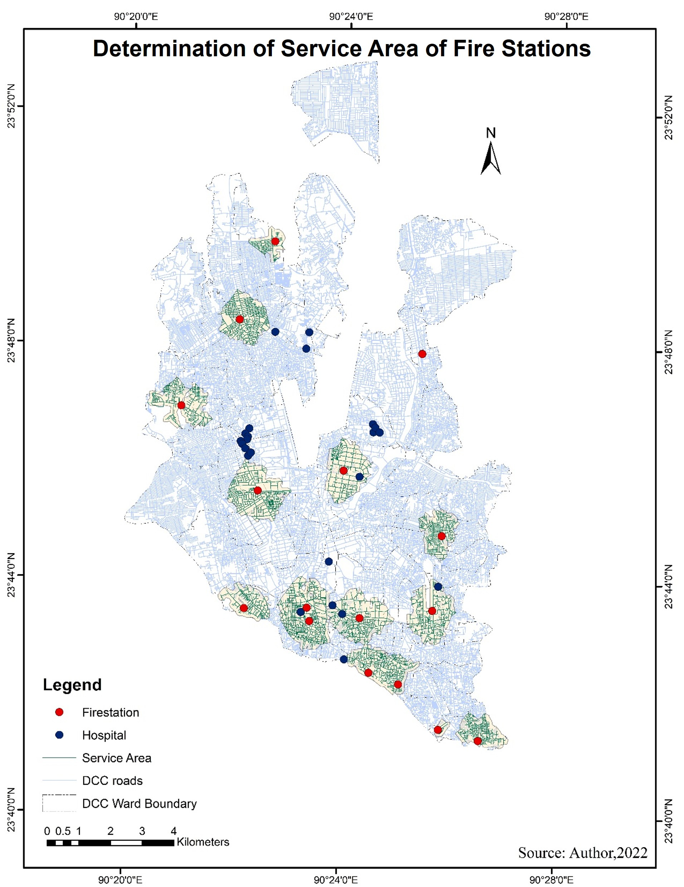 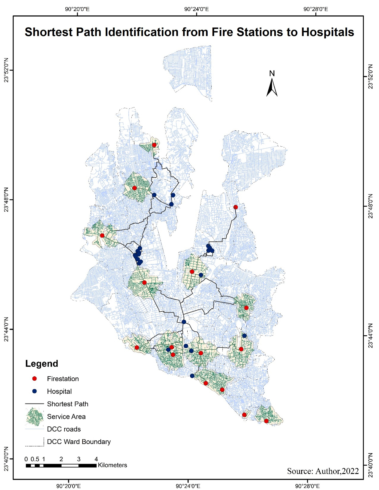
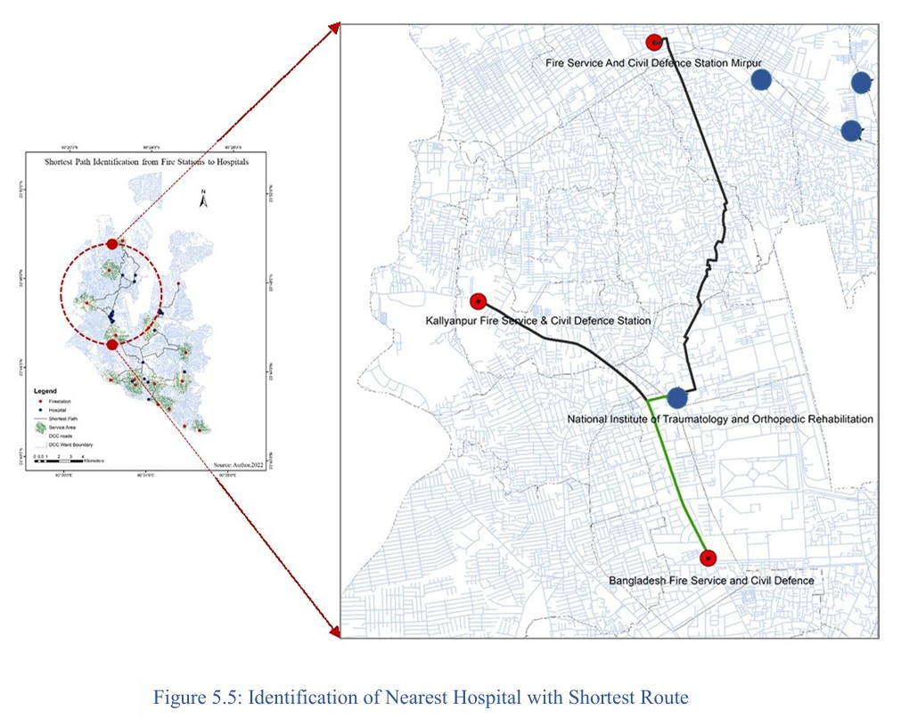
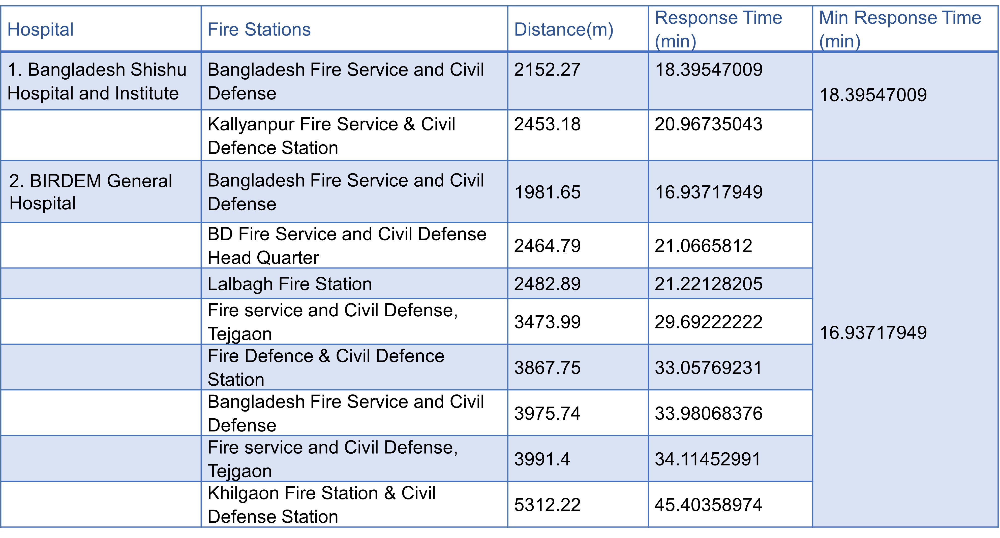 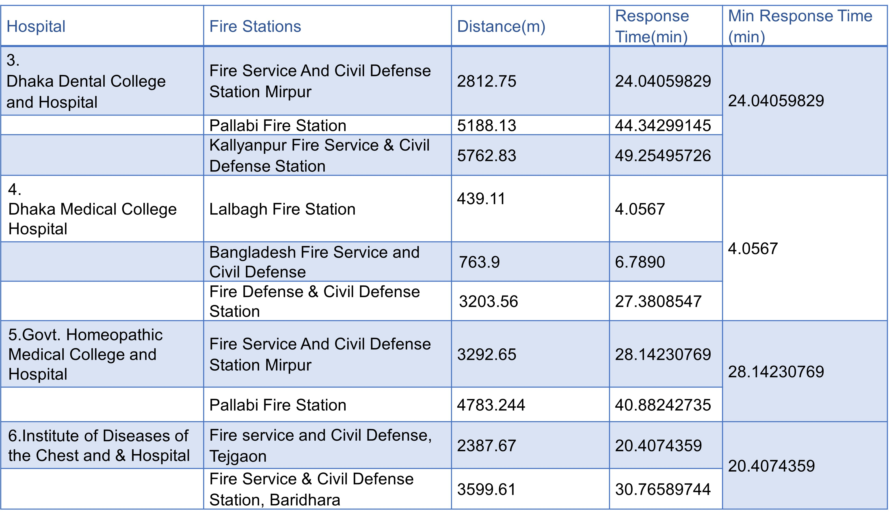
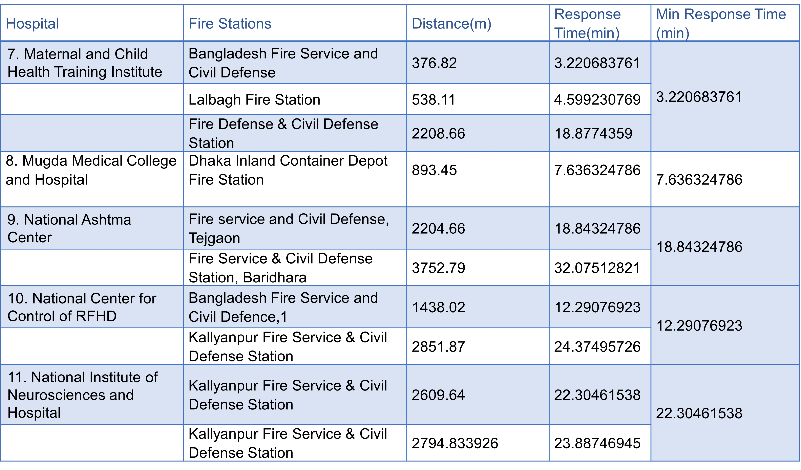 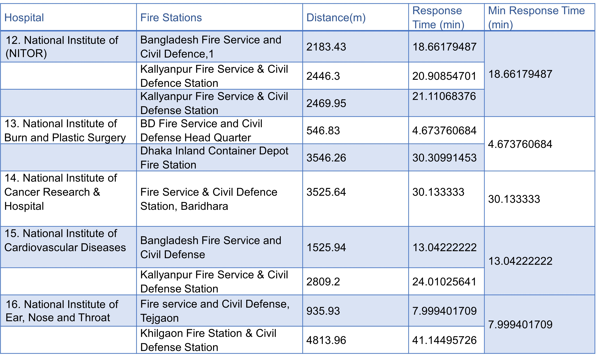
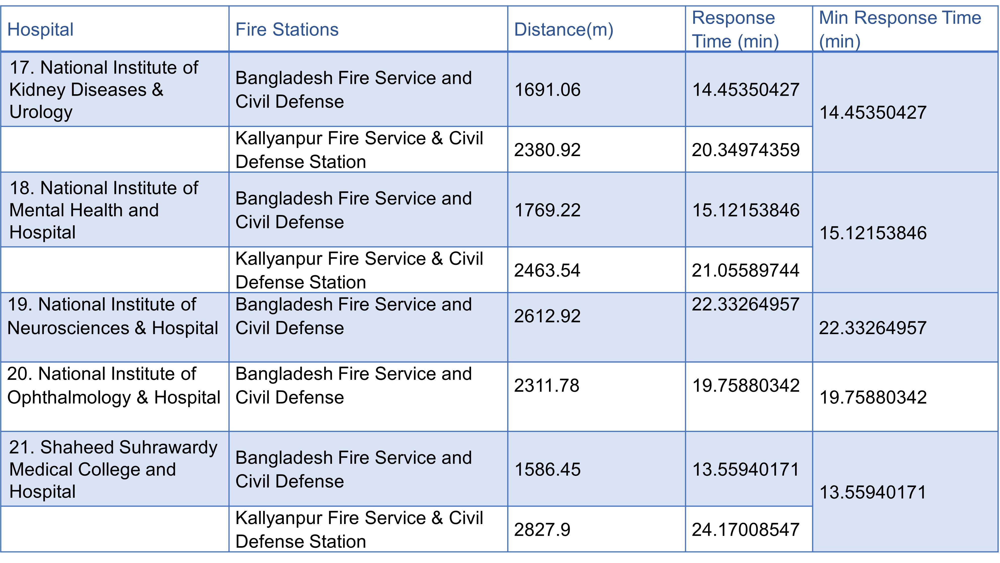 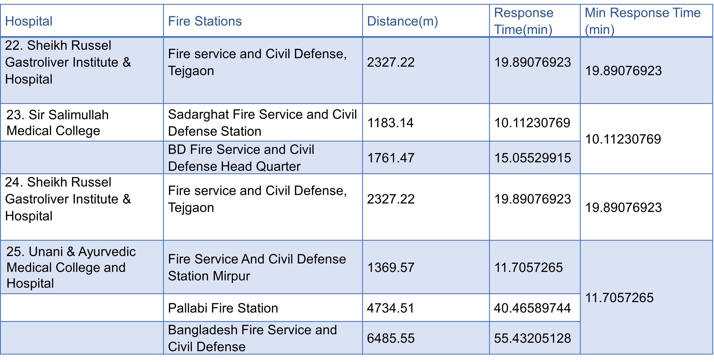
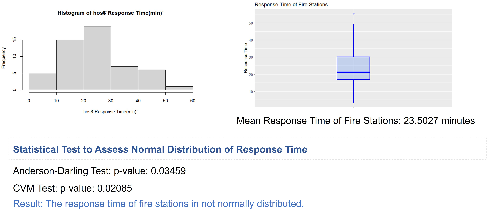
Response time of majority of the fire stations fall within the range of 20 to 50 minutes which is higher than the NFPA standard response time (Nine minutes twenty seconds) of fire stations.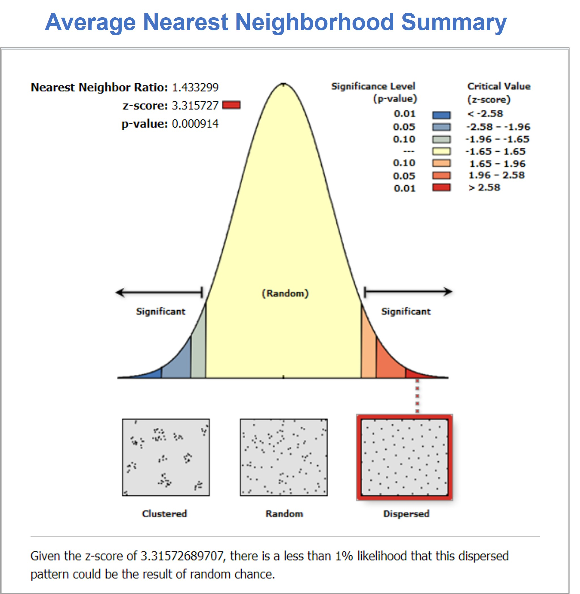
The distribution of fire stations follow a dispersed spatial distribution which implies, at the time of selecting locations for fire stations less priority was given to the location of the existing hospitals. As a result, majority of the hospitals are located outside the service area of fire stations.Different features of ward # 73 of Dhaka city were depicted. A suitable place to construct a new health center in that ward was identified considering the following criteria:
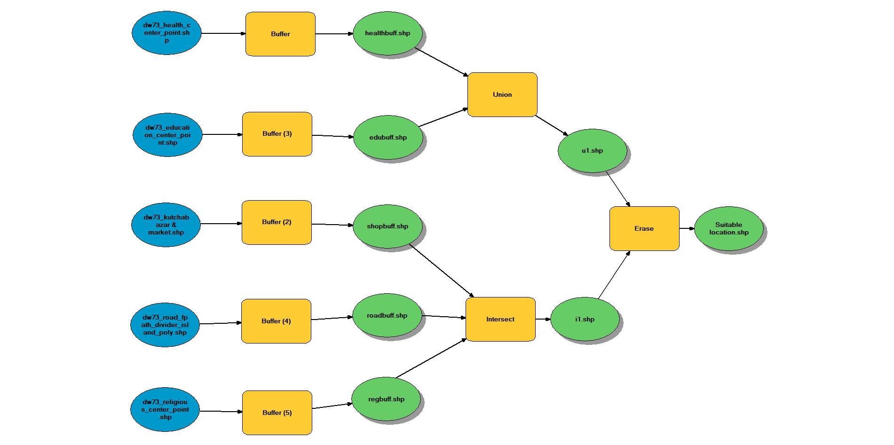
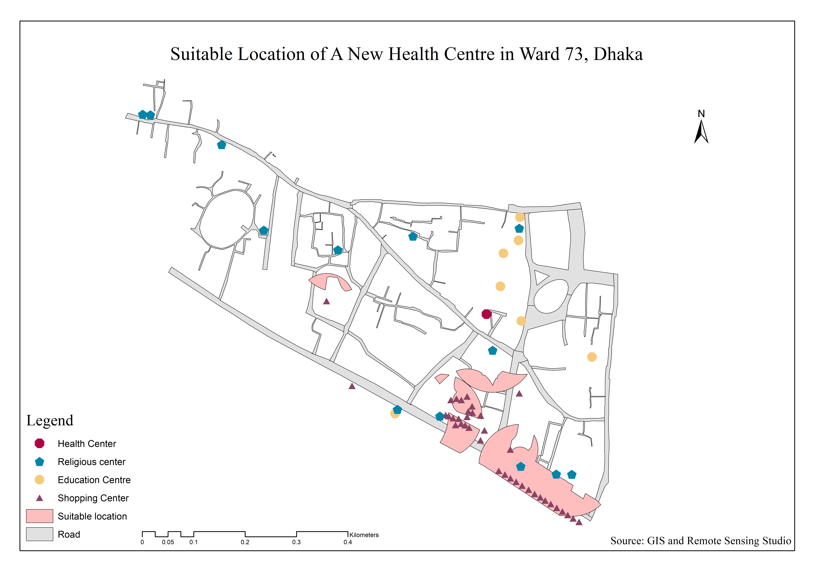